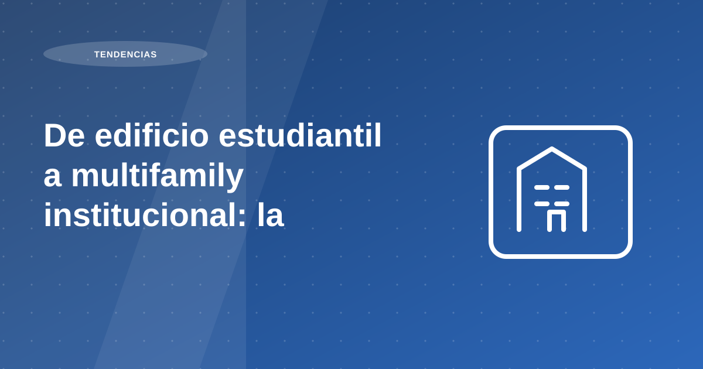

De edificio estudiantil a multifamily institucional: la reconversión de MODO

Resumen: MODO es un edificio de 20 pisos en San Miguel con más de 200 departamentos, concebido inicialmente para renta estudiantil. Cuando Proper Rentas asumió la gestión, la ocupación rondaba el 35%. El objetivo es reconvertirlo hacia un modelo multifamily mixto (20% estudiantes, 80% profesionales jóvenes y familias), con property management y asset management profesional, tecnología de cobranza y un programa de refacción para recuperar disponibilidad y valor del activo.
Tabla de contenidos
- Un edificio pionero, un desafío mayor
- 1) Conocer al cliente real
- 2) La operación importa tanto como el modelo
- 3) Property Management vs Asset Management
- Property Management (gestión diaria)
- Asset Management (activo físico y financiero)
- 4) En proceso: la transformación hacia un multifamily mixto
- 5) El valor de la escala: diversificar el riesgo
- 6) El desafío pendiente: el IGV
Un edificio pionero, un desafío mayor
En marzo de este año asumimos la gestión de MODO , el primer edificio del Perú diseñado 100% para renta estudiantil. Ubicado en San Miguel , con 20 pisos y más de 200 departamentos , fue concebido para atender a estudiantes de la Universidad Católica y San Marcos, con departamentos completos, habitaciones compartidas y modelos de camarotes.
Era un edificio moderno y bien ubicado, pero con un modelo que no había logrado consolidarse. Cuando Proper Rentas tomó el control, la ocupación rondaba el 35% . El reto es transformarlo hacia un modelo multifamily de largo plazo , estable y profesionalmente gestionado.
- Meta: >95% de ocupación con multifamily mixto
Recomendación operativa: traduce la tendencia del mercado a decisiones concretas de producto, precio y experiencia. El dato por sí solo no genera resultado si no se convierte en ejecución.
1) Conocer al cliente real
La dinámica del mercado estudiantil tiene una particularidad clave: el estudiante no es quien paga la renta; son los padres . Esto cambia el modelo, porque la demanda depende del ingreso promedio de las familias y de su capacidad y disposición de pago.
Aunque el edificio ofrecía amenities, seguridad y diseño, la demanda no fue suficiente para sostener 200 unidades a los precios proyectados. La competencia venía de casas y departamentos cercanos adaptados informalmente para alquiler estudiantil, a precios menores. Resultado: un edificio de calidad superior que no se llena.
- Estudiantes extranjeros: un mercado pequeño y con baja representación en San Miguel.
- Estudiantes de provincia: familias que suelen maximizar presupuesto total (la vivienda es un componente crítico).
Recomendación operativa: traduce la tendencia del mercado a decisiones concretas de producto, precio y experiencia. El dato por sí solo no genera resultado si no se convierte en ejecución.
2) La operación importa tanto como el modelo
Al entrar, encontramos una operación compleja: morosidad alta , contratos que no cumplían la regulación local, y una gestión manual (excel), sin sistemas digitales para recaudar rentas y controlar el edificio.
Además, pese a tener cerca del 65% de departamentos vacíos, no todos estaban disponibles. Muchos departamentos presentaban deterioros (humedad, moho, pintura dañada, olores, problemas eléctricos, losetas sueltas) y falta de mantenimiento. Los sistemas del edificio (ventilación, energía, control de accesos) requerían intervención, sin trazabilidad ni planificación técnica.
El edificio tenía potencial, pero había perdido valor operativo. Sin una operación técnica sólida, ningún modelo comercial se sostiene.
Recomendación operativa: traduce la tendencia del mercado a decisiones concretas de producto, precio y experiencia. El dato por sí solo no genera resultado si no se convierte en ejecución.
3) Property Management vs Asset Management
Un operador institucional debe gestionar dos capas complementarias, pero distintas: property management (operación diaria) y asset management (activo físico-financiero). Esta distinción es clave para cualquier proyecto multifamily en Perú.
Recomendación operativa: traduce la tendencia del mercado a decisiones concretas de producto, precio y experiencia. El dato por sí solo no genera resultado si no se convierte en ejecución.
Property Management (gestión diaria)
En MODO, esto implicó implementar nuestra plataforma de recaudación automática, pagos digitales y control de vencimientos. El objetivo fue depurar cartera, priorizar inquilinos confiables y construir una base sana de largo plazo. Si bien el impacto inmediato fue una caída en ocupación por salida de inquilinos morosos, permite construir estabilidad en el tiempo. Hoy, gracias a ello, hemos reducido la morosidad a cero dentro de los primeros siete días del mes .
- Comercialización, atención y experiencia del cliente.
Recomendación operativa: traduce la tendencia del mercado a decisiones concretas de producto, precio y experiencia. El dato por sí solo no genera resultado si no se convierte en ejecución.
Asset Management (activo físico y financiero)
En MODO, durante los primeros 3 a 4 meses, el foco fue un programa integral de refacción para recuperar disponibilidad, mantener el diseño del edificio y hacerlo competitivo frente a la oferta nueva en San Miguel.
Idea clave: property management te ayuda a llenar y sostener ocupación con una cartera sana; asset management protege el valor del activo y mantiene el flujo en el tiempo.
- Mantenimiento correctivo y preventivo.
- Reposición de mobiliario y equipamiento.
- Inversiones para preservar y aumentar el valor del activo.
Recomendación operativa: traduce la tendencia del mercado a decisiones concretas de producto, precio y experiencia. El dato por sí solo no genera resultado si no se convierte en ejecución.
4) En proceso: la transformación hacia un multifamily mixto
Nuestro plan es alcanzar una ocupación superior al 95% , consolidando un modelo mixto 20% – 80% : estudiantes (minoría) y profesionales jóvenes/familias en el resto del edificio.
- Tecnología de control y trazabilidad.
- Enfoque en experiencia del inquilino.
Recomendación operativa: traduce la tendencia del mercado a decisiones concretas de producto, precio y experiencia. El dato por sí solo no genera resultado si no se convierte en ejecución.
5) El valor de la escala: diversificar el riesgo
Una ventaja estructural del modelo multifamily es la diversificación de riesgo:
Esa es la potencia del multifamily: ingresos más estables, vacancias acotadas y una operación que se apalanca en escala. Además, contrasta con activos con pocos inquilinos (oficinas/industrial), donde la salida de uno puede afectar fuertemente el flujo.
- Si tienes una sola propiedad y el inquilino se va, pierdes el 100% del ingreso.
- Si en un edificio de 100 unidades una se desocupa, se pierde solo el 1% del flujo.
Recomendación operativa: traduce la tendencia del mercado a decisiones concretas de producto, precio y experiencia. El dato por sí solo no genera resultado si no se convierte en ejecución.
6) El desafío pendiente: el IGV
Hoy, el multifamily en el Perú enfrenta una barrera relevante: el IGV aplicado a rentas institucionales . A diferencia de oficinas o industriales, aquí los inquilinos suelen ser personas naturales, que no pueden usar el IGV como crédito fiscal. Esto convierte una parte relevante del impuesto en un costo directo, limita rentabilidad y dificulta expansión del sector.
En otros países, la renta institucional puede contar con tratamientos fiscales distintos o incentivos. En el Perú aún falta un marco que impulse este tipo de desarrollo, pese a su potencial para ampliar vivienda formal de calidad.
Recomendación operativa: traduce la tendencia del mercado a decisiones concretas de producto, precio y experiencia. El dato por sí solo no genera resultado si no se convierte en ejecución.
Plan de acción recomendado para propietarios
En temas de mercado urbano y tendencias, la clave es convertir señales macro en decisiones micro. Comienza con un mapa de demanda por zona, ticket de alquiler viable y perfil de inquilino objetivo. Sin ese cruce, es difícil diseñar un producto realmente competitivo.
Luego, revisa atributos del inmueble que más pesan en decisión: ubicación efectiva, conectividad, funcionalidad del layout y nivel de equipamiento. En escenarios de oferta amplia, estos factores son determinantes para sostener ocupación.
Por último, diseña un plan comercial y operativo coherente con ese posicionamiento: narrativa del aviso, tiempos de respuesta, experiencia de visita y proceso de cierre. El mercado premia consistencia entre promesa y ejecución.
- Mapear demanda por tipología y zona.
- Definir propuesta de valor por segmento.
- Ajustar precio con data de mercado reciente.
- Medir tracción comercial por semana.
Errores frecuentes y cómo evitarlos
Error frecuente: copiar estrategias de otras zonas sin adaptar la propuesta al contexto del distrito. Aunque dos ubicaciones parezcan similares, el comportamiento de demanda puede cambiar de forma significativa.
Otro error es evaluar desempeño solo por visitas. Lo importante es la conversión a propuestas firmes y la calidad del perfil interesado, no solo volumen de contacto.
Indicadores para medir resultados mes a mes
Para medir si la estrategia funciona, controla tasa de conversión visita-propuesta, días promedio a cierre y porcentaje de ocupación efectiva por trimestre. Esos indicadores reflejan ajuste real entre producto y mercado.
Incluye un KPI de satisfacción del inquilino en etapa de ingreso. Una experiencia inicial ordenada mejora permanencia y reduce costos de rotación.
Preguntas frecuentes
¿Qué acelera más un alquiler: bajar precio o mejorar proceso?
Mejorar proceso primero: publicación, filtros y tiempos de respuesta suelen tener mayor impacto sostenible.
¿Qué debe estar listo antes de publicar?
Documentación, fotos reales, reglas de evaluación y rango de negociación definido.
¿Qué evita retrabajo durante la gestión mensual?
Estandarizar contrato, cobranza, registro de incidencias y reportes al propietario.
Conclusión
Al revisar de edificio estudiantil a multifamily institucional: la reconversión de modo, la conclusión principal es que la rentabilidad no depende de una sola decisión, sino de la calidad del proceso completo: análisis previo, ejecución comercial, filtro, contrato y administración mensual.
Si priorizas estandarización, medición y mejora continua, reduces vacancia, controlas riesgo y sostienes mejores resultados para tu propiedad en el tiempo.